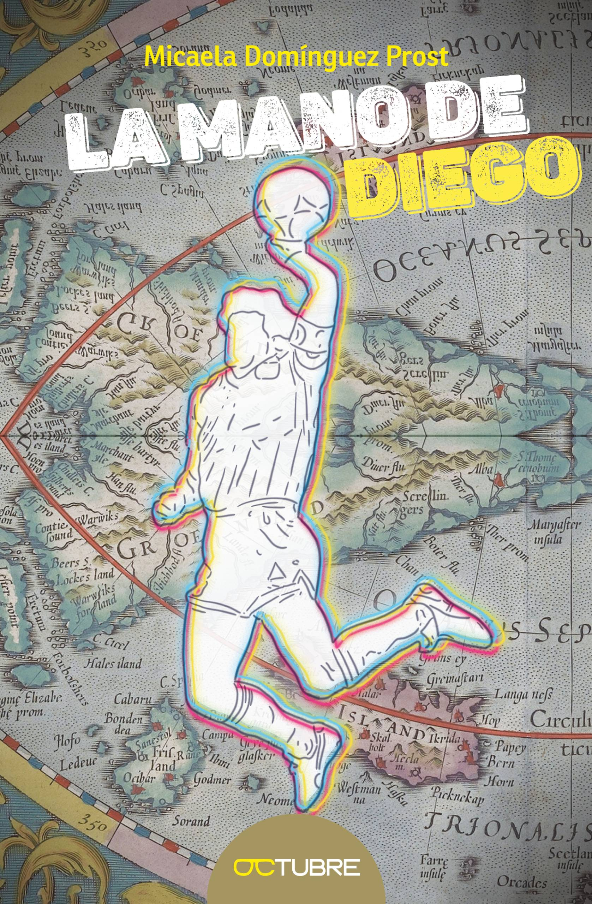
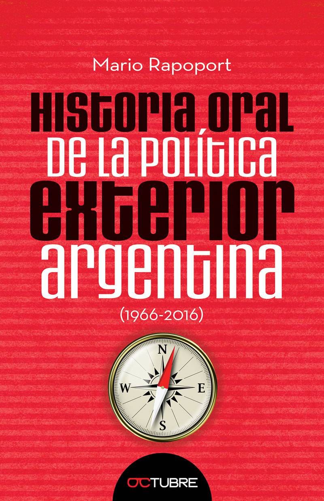
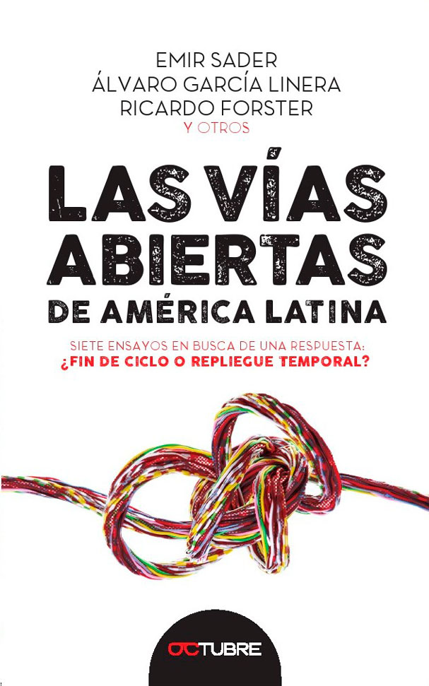
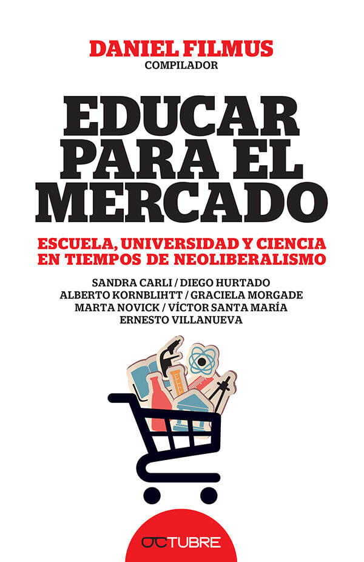

| PUBLICACIONES | |||
|---|---|---|---|
| LIBRO | TITULO DE LA OBRA | AUTOR | ISBN |
|  | La Mano de Diego | Micaela Domínguez Prost | 978-987-3957-74-1 |
| José Mujica - Semillas al viento | Mario Mazzeo,Carlos Martell | 978-987-3957-77-2 | |
| No Fue Magia | La historia contemporanea a traves de las tapas de pagina/12 | 978-987-3957-72-7 | |
| Qatar volver a vivir | Juan Jose Panno | 978-987-3957-80-2 | |
| Meta Pensar | Victor Hugo Morales | 978-987-3957-82-6 | |
| No voy a traicionar a Borges | Jose Luis Rodriguez Zapatero | 978-987-3957-81-9 | |
| Un Traje a Medida | María Laura Leguizamón | 978-987-3957-08-6 | |
|  | Historia oral de la política exterior argentina | Mario Rapoport | 978-987-3957-13-0 |
|  | Las vías abiertas de América Latina | Emir Sader, Álvaro García Linera, Ricardo Forster y otros | 978-987-3957-15-4 |
| Combatir para comprender | León Rozitchner/ Cristián Sucksdorf (editor) | 978-987-3957-27-7 | |
|  | Educar para el mercado | Daniel Filmus | 978-987-3957-20-8 |